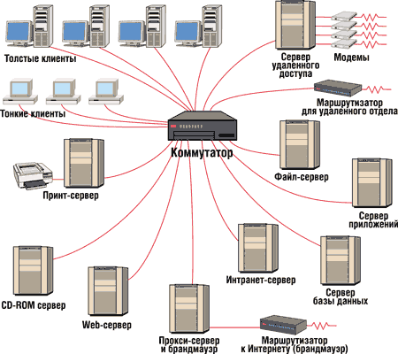
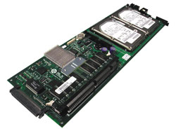
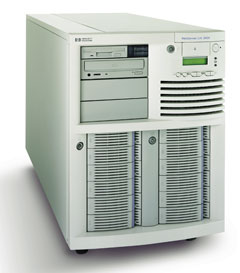
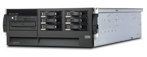

Андрей Борзенко
Термин "сервер" толкуют по-разному. Иногда его относят к оборудованию, а иногда - к ПО. В некотором смысле оба этих определения относятся к архитектуре, подготовленной к получению запросов извне и отвечающей на эти запросы путем выдачи информации заданного типа. Разумеется, в обоих случаях ядром системы является соответствующее ПО. Когда об оборудовании говорят как о сервере, обычно имеют в виду, что на нем работает одна или более серверных программ, что он может быть предназначен для той или иной роли и, возможно, состоит из компонентов, обеспечивающих высокую степень готовности. Вообще говоря, слово "сервер" имеет тот же корень, что и "сервис". Таким образом, с точки зрения аппаратных средств сервер - это компьютер, который способен оказывать некоторые услуги другим, подсоединенным к нему компьютерам. Подразумевается, что компьютеры каким-то образом связаны с сервером и друг с другом (рис. 1).
|  |
| Рис. 1. Различные серверы в локальной сети.
|
Правильный выбор сервера для организации - нелегкая задача. Широкий ассортимент серверных систем требует от руководителей ИТ-служб реалистичной оценки требований к их вычислительной мощности, масштабируемости, надежности и степени готовности. Они должны четко сформулировать, каковы будут требования к серверам, изучить возможности сервисной поддержки, а также определить будущие затраты на модернизацию. Кроме того, надо хорошо ориентироваться в разнообразии предлагаемой на рынке продукции.
Некоторые сегодняшние серверы берут свое начало в моделях, использовавшихся на протяжении уже многих лет; иные же представляют собой результат их развития, часто будучи отмечены новыми, удобными в маркетинге именами. В верхнем сегменте этого рынка царит атмосфера конкуренции и новаций, а нижний может привести в замешательство множеством имен категорий, которые иногда изобретаются лишь для того, чтобы дифференцировать продукт от его ближайшего конкурента.
Серверы можно классифицировать, например, по классу задач, который на нем выполняется, или по количеству обслуживаемых клиентов. В соответствии со вторым методом различают серверы масштаба:
- рабочей группы (workgroup);
- отдела (department);
- средних организаций (midrange);
- предприятия (enterprise).
Нужно сказать, что, поскольку в рамках каждого типа конфигурация серверов довольно значительно варьируется, четких границ между ними установить нельзя. Мощные компьютеры младшего класса могут выполнять роль серверов начального уровня в старшем смежном классе и наоборот. Тенденция к размыванию границ в последнее время настолько усилилась, что чаще всего рассматриваются серверы только трех классов: для рабочих групп, отделов и предприятий. Кроме того, по стоимости серверы можно подразделить на системы высокого, среднего и начального класса.
Надо отметить, что классификаций серверов существует довольно много, причем все они в той или иной степени перекрываются. Так, фирмы-производители часто подразделяют выпускаемые серверы по типу исполнения: сверхтонкие (blade), классические напольные (tower), оптимизированные для установки в стойку (rack) и с высокой степенью масштабируемости (super scalable).
Перевод слова blade как "лезвие", безусловно, не совсем точен. Видимо, этот образ навеян кухонными ножами, хранимыми в специальной подставке. Часто применяют также термин "сверхтонкий". Идея подобных компьютеров (рис. 2) заключается в том, чтобы упаковать в одной стойке как можно больше независимых систем, - по сути, это логическое развитие подхода, начало которому было положено просто тонкими серверами высотой 1U. В этом случае не только экономится место, отводимое под каждый сервер, но и уменьшается энергопотребление.
|  | Рис. 2. Blade-сервер.
|
Напольные серверы (рис. 3) обычно представляют собой самодостаточную систему (all-in-one, "все в одном"). Они обеспечивают высокую гибкость при размещении компонентов в корпусе и легко наращиваемы. Серверы для установки в стойку (рис. 4) предназначены для консолидации серверов в центрах обработки данных и использования их с внешними подсистемами памяти. Они могут эффективно применяться для кластерных решений, когда сами серверы, внешняя память и дополнительные устройства размещаются в тех же стойках. Серверы с высокой степенью масштабируемости обычно предназначены для крупных предприятий и способны обеспечить решение практически любых задач корпорации.
|  |  |
| Рис. 3. Напольный сервер.
|
Рис. 4. Сервер для установки в стойку.
|
Ниже обсуждаются некоторые распространенные типы серверов, классифицируемых по классу решаемых задач. Необходимо подчеркнуть, что в общем случае речь не идет о разных устройствах, каждое из которых выполняет свою функцию. Все перечисленные "обязанности" (а также многие другие) может выполнять один компьютер. Обладая высокими характеристиками для консолидации систем, современный сервер с помощью соответствующего ПО способен взять на себя решение целого ряда задач.
Web-серверы
Интернет существовал в различных ипостасях задолго до того, как на сцену вышли Web-серверы, но в те времена он не имел такого широкого распространения и не использовался так интенсивно, как в наши дни. Во многом Web-сервер похож на роботизированный буфет. Клиент запрашивает у него нечто - в нашем случае файл, а Web-сервер получает этот файл и пересылает его клиенту. В большинстве случаев оригинальный Web-сервер ничего не делает с этим файлом и просто отпасовывает его клиенту. Современные Web-серверы могут одновременно обрабатывать большое число запросов и быстро выдавать ответы на них, а кроме того, получили развитие их способности обрабатывать запросы более сложными способами, чем простая пересылка документа. В результате Web-серверы вторглись на новую территорию и стали называться "серверами приложений" или "информационными серверами".
Серверы приложений
У сервера приложений расширены возможности обработки информации, и его взаимодействие с клиентом становится подобным работе приложения, напоминая скорее работу пользователя с компьютером, нежели чтение книги, где у читателя есть только возможность перелистывать страницы. Поразительные возможности сервера приложений можно реализовать за счет разумной комбинации существующих технологий. Например, разработчик открытых программных средств может соединить Web-сервер Apache с языком написания сценариев PHP, получив по сути дела сервер приложений. Однако в маркетинге термином "сервер приложений" обычно обозначается предлагаемое продавцами комплексное решение, которое содержит все требуемые компоненты технологий. Для некоторых организаций такой комплексный подход к построению сервера приложений облегчает разработку благодаря унификации разрабатываемых моделей и централизации поддержки.
Файл-серверы
Файл-сервер - важный компонент электронной инфраструктуры любой компании. Это очень быстрый компьютер, подключенный к сети, где хранятся программы и данные, используемые пользователями совместно. Для этой цели он имеет жесткие диски большой емкости, доступ к которым предоставлен всем компьютерам, входящим в данную сеть. Файл-сервер делает именно то, о чем говорит его название: он обеспечивает взаимодействие между сетевыми станциями и дает пользователям доступ к файлам, которые необходимы им для работы. Кроме того, файл-сервер обычно ограничивает несанкционированный доступ к данным.
Преимущества такой схемы очевидны: информация хранится централизованно, а не раскидана по компьютерам разных сотрудников; она доступна с любого компьютера, подключенного к серверу (а это могут быть и удаленные компьютеры, которые связываются с сервером по телефону), и может быть защищена от доступа, поскольку для подключения к серверу требуется пароль. Еще одно немаловажное достоинство сервера - высокая надежность хранения информации, так как серверы защищены от сбоев и других проблем гораздо лучше ПК. Даже в случае полного выхода из строя какого-либо из дисков сервера существуют методы полного восстановления информации, к тому же совершенно незаметно для работающих с сервером.
Собственно, разница между файл-сервером и сервером приложений заключается в том, что первый хранит программы и данные, а второй выполняет программы и обрабатывает данные.
"Беспроводной" сервер
Термин "беспроводной" сервер может применяться к двум различным технологиям. В простейшей интерпретации такой компьютер может представлять собой типичный Web- или сервер приложений, который просто знает, как передавать документы, составленные на стандартном для беспроводных устройств языке. Часто в качестве такого языка выступает Wireless Markup Language (WML). Адаптация Web-сервера для работы в качестве беспроводного сервера, способного обрабатывать документы WML-типа, обычно сводится к тому, чтобы просто "обучить" сервер распознаванию этих документов. От Web-сервера требуется только сообщить клиенту, что документ составлен в формате для беспроводных устройств, и на этом его работа заканчивается.
Более сложный тип "беспроводного" сервера - "беспроводной" шлюз. В своей основе такой шлюз служит посредником, который принимает запросы от беспроводных устройств и направляет их традиционным Web-серверам. Большинство "беспроводных" шлюзов управляются поставщиками услуг, специализирующимися на предоставлении беспроводного доступа, что может ограничить абонентов уровнем только тех сервисов, которые поддерживают эти шлюзы. В настоящее время подобные системы сосредоточены в довольно узком сегменте рынка.
Прокси-серверы
Хотя концепция прокси-серверов считается весьма современной, она уходит корнями в древнее и пыльное библиотечное дело. Так, при заказе книги из закрытого для доступа хранилища библиотекарь обычно выступает в качестве уполномоченного посредника (прокси). Конечно, как правило, этот процесс занимает больше времени, чем если бы сам клиент имел доступ к стеллажам с книгами. Но если представить, что каждый раз, когда библиотекарь приносит книгу для одного клиента, он делает несколько ее копий и оставляет их для выдачи тем, кому потребуется та же самая книга, то станет понятно, что это действительно идеальная комбинация быстрого обслуживания и надежной защиты. Приведенная аналогия показывает две основные функции прокси-сервера. Во-первых, он действует как посредник, помогая пользователям получить информацию из Интернета, когда она им необходима, и при этом обеспечивая защиту сети. Во-вторых, прокси-сервер может сохранять часто запрашиваемую информацию в кэш-памяти на локальном диске, быстро доставляя ее пользователям без повторного обращения к Интернету.
Но прокси-сервер способен на гораздо большее, чем простое кэширование часто запрашиваемых данных. Поскольку он как бы "прислушивается" к нуждам своих клиентов, обслуживая их запросы, самим клиентам часто вообще нет необходимости напрямую обращаться в Интернет. Таким образом, прокси-сервер стал весьма популярным способом стыковки корпоративных интрасетей с Интернетом. С ростом популярности и доступности широкополосных соединений возрастала и потребность в прокси-серверах. Дело в том, что подобные соединения обеспечивают ширину полосы, достаточную для одновременной поддержки нескольких машин, а в решениях на основе прокси-сервера для поддержания широкополосного соединения достаточно задействовать только одну из этих машин, что позволяет предприятиям экономно использовать пространство IP-адресов, а также снизить размер оплаты услуг провайдеру Интернета.
Брандмауэры
Прокси-сервер можно сконфигурировать так, что он будет принимать или отвергать определенные типы сетевых запросов как из локальной сети, так и из Интернета. В такой конфигурации прокси-сервер становится межсетевым экраном - брандмауэром. Брандмауэр, как и подразумевает его боевое имя, представляет собой средство обеспечения безопасности, задачи которого во многом схожи с работой пограничников: осматривать каждый фрагмент данных, который пытается пересечь границу.
В зависимости от уровня совершенства межсетевого экрана его можно настроить таким образом, что он будет способен различать множество типов входящих и исходящих данных. Получение разрешения на передачу данных в том или ином направлении зависит от определенных условий, например, от IP-адреса, с которого отправлены эти данные. Хорошие брандмауэры также обеспечивают широкие возможности ведения журнала, поскольку свидетельства сетевой активности служат ключом к расследованию случайных происшествий или преднамеренных инцидентов.
Существуют брандмауэры в виде функционально законченных систем, а также прокси-серверы с возможностями брандмауэров. Поскольку брандмауэр больше похож на "ров с водой", разделяющий серверы, кто-то может посчитать, что он не является сервером в традиционном смысле.
Почтовые серверы
Подобно прокси-серверу, почтовый сервер (иногда называемый сервером сообщений) должен заниматься как входящими, так и исходящими запросами. В приложении к электронной почте обычную локальную сеть или интрасеть можно представить себе как жилой дом, т. е. как некую единую структуру, состоящую из независимых квартир жильцов, а почтовый сервер - как почтальона, посещающего это здание. Каждый из жителей может иметь почтовый ящик, откуда они достают электронную почту. Одна из задач почтового сервера - чтение адресов входящих сообщений и доставка корреспонденции в соответствующие почтовые ящики в пределах интрасети. В зависимости от совершенства почтового сервера он может предоставлять администратору большую или меньшую степень контроля над этими локальными почтовыми ящиками, типами и размерами сообщений, которые они в состоянии получать, автоматическими ответами, которые можно составлять, и т. п.
Почтовый сервер также обрабатывает исходящие сообщения, собирая оставленную жильцами почту, как это делают почтальоны, вынимающие корреспонденцию из обычных почтовых ящиков. Точно так же, как почтальон не доставляет лично каждое исходящее сообщение по указанному отправителем адресу, и почтовый сервер сконфигурирован на взаимодействие с другими серверами или узлами, через которые проходит сообщение до тех пор, пока не достигнет сети назначения. На этом этапе доставка сообщения в почтовый ящик получателя осуществляется почтовым сервером сети.
Большинство провайдеров Интернета предоставляют своим абонентам почтовые услуги, поэтому отдельным пользователям чаще всего нет нужды устанавливать собственные почтовые серверы, а вот организации, независимо от их размеров, могут получить некоторые преимущества от установки собственного сервера электронной почты, поскольку в этом случае обеспечивается более высокий уровень удовлетворения специфических требований пользователей в сравнении с набором сервисов, предоставляемых сервером провайдера. Среди очевидных преимуществ такого подхода - возможность выбора имен для почтовых ящиков и таких динамических характеристик, как лимиты ресурсов, автоматический ответ, управление почтовым реестром, а также экономия средств, которые потребовались бы на активацию множества адресов e-mail внешним провайдером.
Серверы DHCP
Все машины в глобальной сети Интернет адресуются друг к другу, используя протокол TCP/IP, предоставляющий для каждой из них уникальный числовой IP-адрес. В настоящее время во многих локальных сетях (интрасетях) также используется протокол TCP/IP, но иногда применяются и оригинальные протоколы обмена, такие как NetBEUI или AppleTalk. IP-адрес может присваиваться вручную, или же на одной из машин запускается так называемый сервер DHCP (Dynamic Host Configuration Protocol), который автоматически присваивает IP-адрес каждой локальной машине. Основное преимущество использования сервера DHCP - свобода изменения конфигурации локальной сети при ее расширении, добавлении или удалении машин (например, портативных ПК).
В некоторых случаях ПО сервера DHCP интегрируется в соответствующее оборудование. Так, на рынке появились гибридные устройства, объединяющие функции маршрутизатора/коммутатора с сервером DHCP от таких компаний, как Linksys, Netgear и D-Link. Эти продукты обеспечивают совместное использование единого широкополосного соединения с Интернетом для всех машин локальной сети, а также могут быть сконфигурированы на использование встроенного в них сервера DHCP, который занимается присвоением IP-адресов. Это позволяет динамически подключать и отключать машины без изменения конфигурации сети. Сходным образом эту роль в сети может выполнять одна ведущая машина, если на ней выполняется ПО сервера DHCP.
Серверы FTP
Подобные серверы, работающие на основе протокола File Transfer Protocol, уже многие десятилетия являются стандартом де-факто при перемещении файлов в Интернете. FTP-серверы поддерживают работу простых файловых менеджеров - клиентов. И хотя вопросам безопасности FTP-серверов следует уделять особое внимание, они остаются наиболее популярным и удобным средством перемещения файлов с одной машины на другую как между соседними помещениями одного предприятия, так и между континентами.
Сложные FTP-серверы обеспечивают администратору большие возможности управления в вопросах прав на подключение и совместное использование файлов, типов разделяемых файлов и их размещения. Конфигурируемые ресурсы, выделяемые ряду соединений с сервером, ограничения на количество передаваемых данных и минимальную скорость передачи и т. п., становятся все более популярными средствами, помогающими повысить безопасность FTP-серверов.
Принт-серверы
Такие серверы позволяют всем подключенным к сети компьютерам распечатывать документы на одном или нескольких общих принтерах. В этом случае отпадает необходимость комплектовать каждый компьютер собственным печатающим устройством. Кроме того, принимая на себя все заботы о выводе документов на печать, принт-сервер освобождает компьютеры для другой работы. Например, принт-сервер хранит посланные на печать документы на своем жестком диске, выстраивает их в очередь и выводит на принтер в порядке очереди.
Серверы удаленного доступа
Эти системы позволяют связываться с офисной сетью по телефонным линиям. Находясь с ноутбуком где-нибудь далеко от офиса, всегда можно получить оттуда нужный файл, проверить, не пришла ли электронная почта -- словом, получить любую необходимую информацию. При наличии хороших каналов связи разница между работой в офисе и вне его практически незаметна.
Факс-серверы
Такой сервер заменяет собой обычную факс-машину. Единственное его назначение - управлять процессом получения и отправки факсов, и все это в компьютерных сетях, которые сами по себе намного лучше подходят для обмена документами, чем телефонные линии и кипы термочувствительной или обычной бумаги. Фактически многие функции сложного факс-сервера заключаются в управлении ограниченными ресурсами телефонной связи, которые могли бы стать совершенно ненужными, если бы все перестали пересылать документы по факсу.
В известном смысле факс-серверы выступают в качестве моста между старым и новым способами ведения бизнеса. Во многих отношениях факс-сервер подобен упоминавшемуся ранее почтовому серверу. Оба этих типа серверов служат мостами между исходящими и входящими сообщениями, оба должны направлять входящие сообщения по указанному адресу. В случае почтовых серверов это всегда почтовый ящик конкретного пользователя. Факс-серверы для небольшой однопользовательской среды часто подразумевают, что принимающий сообщение компьютер и есть место назначения, поэтому модель почтового ящика здесь не работает. С другой стороны, у факс-серверов, предназначенных для корпоративного использования, есть некоторые параллели с моделью сервера электронной почты - они обеспечивают доставку входящих факсов по конкретным адресам, присвоенным пользователям.
Хороший факс-сервер может предоставить дополнительные удобства в обработке входящих факсов, такие как прямой вывод на принтер, а также рассылку документа по многим адресам по установленному расписанию и инициирование передачи исходящего факса по запросу. Корпоративные факс-серверы также должны уметь сортировать по приоритету многочисленные исходящие факсы, помещенные в общую очередь различными пользователями. Для дорогостоящих факс-серверов уровня предприятия очень важна способность ПО такого сервера эффективно манипулировать ограниченным числом телефонных линий, для того чтобы избежать конфликтов при планировании отправки и приема факсов.
Сложные факс-серверы также обладают способностью интегрироваться с системами электронного обмена сообщениями, включая электронную почту, Microsoft Exchange и Lotus Notes. Такие возможности делают факс-сервер эффективным мостом между электронными документами и отсталым миром факсимильных сообщений.
Серверные приставки
Современный маркетинг буквально "зациклился" на термине appliance server. Не сразу понятно, что имеется в виду (appliance переводится как аппарат, прибор, приспособление, устройство, в том числе и бытовой электроприбор) и чем такой сервер отличается от других серверов, обсуждавшихся выше. Вообще говоря, слово "appliance" на самом деле не имеет отношения к какому-то конкретному типу сервера как таковому, а говорит только о типе его комплектования и поставки. Фактически этим термином просто обозначают любой тип сервера, который продается уже настроенным, сконфигурированным и готовым к включению в сеть.
Например, если продвигается сервер, описываемый как устройство для Web-хостинга, то на самом деле это Web-сервер (называемый еще сервером приложений), подаваемый как устройство "включи и работай", поскольку оно подходит для установки в существующую сеть. Аналогично, если сервер называют "storage appliance", это говорит о том, что продается файл-сервер, который пользователи могут использовать для чтения-записи файлов и их хранения. На рынке также предлагаются серверные приставки для управления трафиком, для создания виртуальных частных сетей VPN, кэширующие устройства и т. д. В частности, устройства первого типа выполняют три основные функции. Во-первых, они поддерживают криптографический метод SSL (Secure Socket Layer), служащий для обеспечения безопасности электронной торговли. Ускорение SSL достигается с помощью оборудования, которое берет на себя криптографические функции, освобождая от них серверы, осуществляющие обработку транзакций. Вторая функция таких серверных приставок - обработка транзакций XML, она также служит целям разгрузки основного сервера транзакций. И третья, последняя функция - собственно управление трафиком или балансировка нагрузки.
Таким образом, термин "appliance" в применении к серверу может ассоциироваться с любым типом сервера, поставляемого заказчику готовым к использованию, так же, как любой бытовой электроприбор типа холодильника или электрического чайника можно начать использовать сразу после его распаковки.
Серверы для инфраструктуры электронного бизнеса
Как правило, среда электронного бизнеса требует целого ряда серверов, к каждому из которых предъявляются определенные требования в отношении производительности, масштабируемости и степени готовности. Как правило, эти серверы подразделяются на несколько уровней: например, фронтальные Интернет-серверы; промежуточные серверы приложений; серверы баз данных.
Фронтальные Интернет-серверы
В задачу фронтальных Интернет-серверов входят обработка пользовательских запросов (доступ к страницам сайта и данным), поддержка функций межсетевого экрана, прокси-сервера, а также службы аутентификации, которая призвана обеспечить защиту транзакций и разрешить доступ к сетевой инфраструктуре лишь тем пользователям, которые имеют соответствующие права. Главное требование к фронтальным серверам - способность быстро реагировать на пользовательские запросы. Нагрузка на серверы этого типа может существенно изменяться в течение короткого промежутка времени, поэтому для них чрезвычайно важен достаточный запас производительности. В ряде случаев, например, для центров обработки данных на уровне фронтальных Интернет-серверов выделяется два подуровня: серверов доступа и Web-серверов.
Промежуточные серверы приложений
Серверы приложений предназначены для обработки более сложных транзакций, лежащих в основе электронной коммерции в Интернете, а также для персонализации информации, которая необходима для успешной реализации концепции электронного бизнеса третьего поколения. Работающие на этих серверах приложения ответственны за отбор информации по запросам пользователей, причем информационные потребности каждого пользователя могут быть сугубо индивидуальными. Для этого формируются новые запросы, которые передаются серверам баз данных, причем нередко данные извлекаются из нескольких баз данных сразу. Полученная из разных мест информация собирается в единое целое, форматируется и передается фронтальным серверам для отправки пользователю. Как правило, на промежуточных серверах работают приложения, осуществляющие управление заказами и их учет, управление связями с клиентами, а также реализацию заранее сформулированных правил выполнения бизнес-операций.
Серверы баз данных
Серверы баз данных используются для обработки бизнес-транзакций и пользовательских запросов. По мере расширения электронного бизнеса используемые базы данных усложняются и увеличиваются в объеме. Ключевая характеристика сервера баз данных - его способность быстро извлекать и форматировать данные. Решающую роль в этом играют вычислительная мощность и масштабируемость системы.